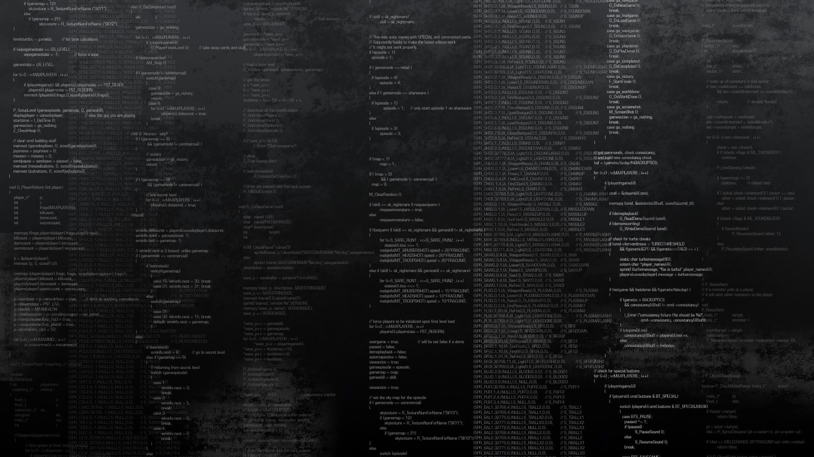

The Journey of Learning IT Development: Unleashing Your Potential
In today's digital age, information technology (IT) has become an indispensable part of our lives. From mobile applications to website development, IT professionals are in high demand, making it an exciting and rewarding career choice. However, embarking on the path of IT development requires dedication, continuous learning, and a growth mindset. In this blog post, we will explore the journey of learning IT development and provide valuable insights to help you unleash your potential in this dynamic field.
01. Defining your Goals:
Before diving into the vast world of IT development, it's crucial to define your goals and aspirations. Understand which aspect of IT development you find most intriguing, whether it's web development, software engineering, mobile app development, or data science. Identifying your goals will help you stay focused and motivated throughout the learning process.
02. Choosing the Right Learning Resources:
The IT development landscape offers a plethora of learning resources, ranging from online tutorials and courses to books and forums. Research and choose resources that suit your learning style and provide a comprehensive understanding of the subject matter. Online platforms like Coursera, Udemy, and Codecademy offer a wide range of courses taught by industry experts, while coding communities like Stack Overflow provide valuable insights and problem-solving assistance.
03. Mastering the Fundamentals:
Building a strong foundation is essential for any aspiring IT developer. Begin by mastering the fundamental concepts of programming languages like Python, JavaScript, or Java. Understand concepts like variables, loops, conditionals, and functions. Familiarize yourself with data structures, algorithms, and object-oriented programming (OOP) principles. These fundamentals will serve as the building blocks for your future development endeavors.
04. Hands-on Practice:
Theory alone won't make you an expert in IT development. Hands-on practice is vital for reinforcing your understanding and honing your skills. Start by working on small projects that align with your interests and gradually increase the complexity. Engage in coding challenges, participate in open-source projects, and collaborate with fellow learners to gain practical experience and improve your problem-solving abilities.
05. Embracing Continuous Learning:
IT development is an ever-evolving field, with new technologies and frameworks emerging regularly. To stay ahead of the curve, embrace the concept of continuous learning. Keep yourself updated with the latest trends, attend workshops, conferences, and webinars, and explore new technologies and frameworks that align with your career goals. Never stop learning, and be open to adapting to the rapidly changing industry.
06. Building a Portfolio:
A portfolio is a powerful tool to showcase your skills and projects to potential employers or clients. As you gain experience, create a portfolio that highlights your best work. Include projects that demonstrate your ability to solve real-world problems and showcase your proficiency in different technologies. A strong portfolio can significantly enhance your chances of landing a job or freelance opportunities in the IT development industry.
07. Networking and Collaboration:
Networking is a valuable asset in the IT development community. Engage with like-minded individuals, attend meetups, join online forums and communities, and connect with professionals already established in the field. Collaboration and knowledge-sharing with peers can open doors to new opportunities, provide mentorship, and broaden your horizons in IT development.
Learning IT development is an exciting and ever-evolving journey. It requires dedication, perseverance, and a passion for continuous learning. By setting clear goals, choosing the right learning resources, mastering the fundamentals, embracing hands-on practice, staying updated with industry trends, building a portfolio, and networking with fellow professionals, you can unleash your potential and carve a successful path in the dynamic world of IT development. Embrace the challenges, enjoy the process, and let your passion for technology guide you towards a fulfilling and rewarding career